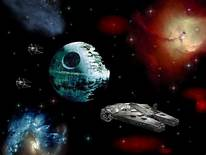
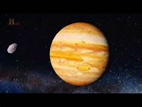

- Merkúr
- Vénusz
- Föld
- Mars
- Jupiter
- Szaturnusz
- Uránusz
- Neptunusz
- Plútó
- Ceres
- Haumea
- Makemake
- Erisz
Szeretne-e az űrutazásról többet tudni?
Milyen folyóiratokat kedvel ebből a témából?


A világűr a világegyetem egitestek közötti légüres térsége. A Föld légkör és a világűr között nincs éles határ. A legáltalánosabb elfogadott határvonal a Nemzetközi Asztronautikai Szövetség által meghatározott 100 kilométeres magasság (a Kármán-vonal), [1] de a funkcionalizmus hívei szerint a világűr ott kezdődik, ahol már létezhet orbitális mozgás. Az Amerikai Egyesült Államokban - éppen emiatt a világrt megjárt egyenként jegyzik be őket. [2] Az űreszközök visszatérésekor 120 km magasságtó válik jelentőssé a légkör fékező hatása, a visszaúton tehát itt ér véget a világűr. A világűr területi felosztása földközpontú: bolygónktól kifelé induló térségekre osztjuk a teret az alacsony Föld körüli pályától az univerzum határáig.
Neve ellenére a világűr nem teljesen üres. Apró porszemcsék, molekulák és atomok formájában itt is van anyag, de sűrűsége olyan kicsi, amilyet a legjobb földi laboratóriumokban sem lehet előállítani. [3] A világűrt 2,7 K hőmérsékletű kozmikus háttérsugárzás tölti be, [4] amely az ősrobbanás egyik fontos következménye.
A világűr felfedezése 1957. október 4-én indult a Szputnyik-1 felbocsátásával, és azóta töretlenül halad. A holdraszállás az Apollo-programban, a víz felfedezése a Marson, esetleg a geliopauzát elérő Voyager szondák kiemelkedő eredmények voltak, de mellettük számos más, az űr megismerését szolgáló, kevésbé látványos program is futottm Ezek a programok ötven év alatt több tudást adtak kezünkbe a világegyetemről, mint amennyit az előző több ezer évben tanultunk róla.
A nagybolygók között kétféle típust különböztetünk meg: kőzetbolygókat és gázbolygókat.
Kőzetbolygók: a belső Naprendszerben a Nap körül keringő, főként szilikátokból felépülő, nagyobb sűrűségű, kisebb méretű égitestek (a csillagászati terminológia Föld tipusú bolygóként is említi őket).
a Naphoz legközelebb keringő, a bolygók közül a legkisebb (sőt, egyes naprendszerbeli holdaknál is kisebb) égitest. Légkörrel nem rendelkezik, felszíne kráterek szaggatta, aránytalanul nagy, vasból áll magja van, extrém hőmérséklet-különbségek tapasztalhatól a szélességi köröktől és a megvilágítottságtól függően. A Nap körül 88 nap alatt tesz egy fordulatot, saját tengelye körül pedig 58-5 nap alatt. Holdja nincs.
a Földhöz hasonoló mérete és tömege miatt bolygónk ikertestvéreként tartjuk számon. Kifelé haladva a Naptól számított második bolygó. Sűrű szén-dioxid légköre van, amelyet a fékezhetetlen üvegházhatás alakított mai formája. Az üvegházhatást okozó gázok elszabadulása valószínűleg a Földnél sokkal több és nagyobb bulkán egykori működésének következménye. A Napot 225 nap alatt kerüli megm saját tengelye körül pedig egy vénuszi évnél is tovább, 243 nap alatt fordul megm az egyetlen bolygó, amelynek a saját tengelye körül forgása retrográd. Hold nem kering körülötte.
életünk színtere, a felszínének 71%-án vízborítással rendelkező, oxigén-nitrogén legkörű, tektonikus felszínformáló reők által formált, a magban folyó folyamatok által gerjesztett mágneses térrel védelmezett bolygó, a Naptól sorrendben a harmadik. A Naprenszer legnagyobb kőzetbolygója. Egyetlen hold kering körülötte.
kifelé haladva a negyedik, egyben utolsó Föld típusú bolygó, méretben a Földtől sokkal kisebb, amelyen gyér szén-dioxid légkör található. Az egyetlen, amelyen a Földön kívül lehetségesnek tartják az élet egykori, esetleges jelenlétét. Két holdja van, amelynek befogott aszteroidák lehetnek.
a Naprendszer legnagyobb bolygója. Két fő összetevőből, hidrogénből és héliumból áll és feltételezések között egy kis méretű, nehezebb elemekből álló, óriási nyomás alatt lévő központi magja van. Holdak tucatjai keringenek körülötte, köztük a Naprendszer legnagyobb holdja(i).
A Jupiterhez hasonló gázóriás, méretben és tömeg kisebb, de felépítésében, összetevőiben teljesen hasonló. Ennél a bolygónál is rengeteg hold figyelhető meg és egy nagyon látványos gyűrűrendszer is kering körülötte.
A Naprendszer hetedik beolygója, amely szintén gázóriás, ám kisség már össuetevőkkel rendelkezik, mint a Jupiter és a Szaturnusz (ezért szokás külön kategóriaként, "jégóriásként" is emlegetni). A hidrogén és hélium mellett víz, ammónia és metán is van a légkörében, ami más (kékeszüld) színt is kölcsönöz a számára. Ugyancsak rendelkezik holdakkal és gyűrűvel.
A legkülső nagybolygó, amely az Uránusz ikertestvére, teljesen hasonló mind méretében, mind tömegében és összetételében.
Szeretne-e az űrutazásról többet tudni?
Milyen folyóiratokat kedvel ebből a témából?
